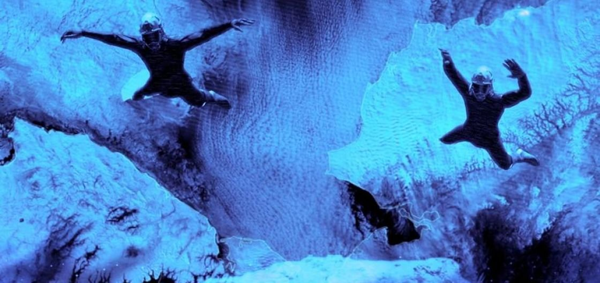
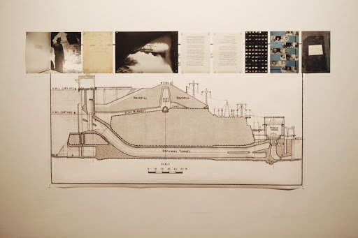
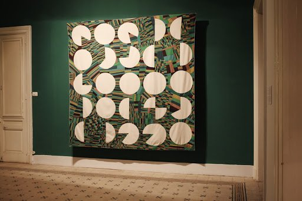
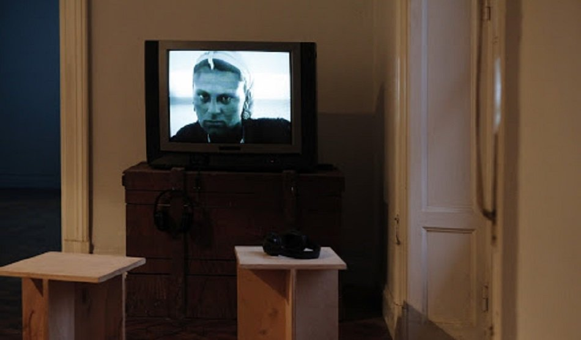
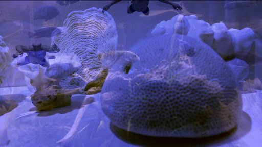
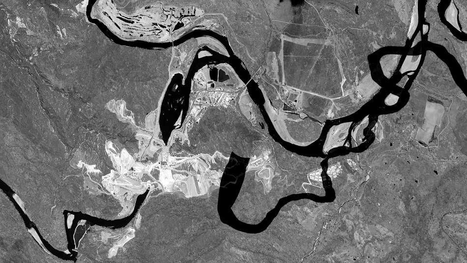
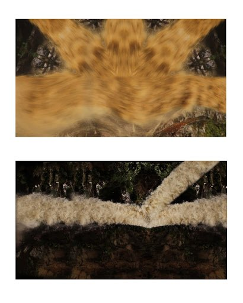

بقلم إسماعيل فايد

معرض «مُغمر: عن الأنهار وتدفقها المنقطع» - الصورة: مركز الصورة المعاصرة
والناس في حبه سكارى هاموا على شطه الرحيبِ
آهٍ علي سرك الرهيب وموجك التائه الغريبِ
يا نيل يا ساحر الغيوبِ
لم يتفرَّد محمود حسن إسماعيل بالتغني بالنيل، فقد كتب أحمد شوقي قصيدة غناها محمد عبد الوهاب أيضًا، بعنوان «النيل نجاشي». بل بالأحري، فإن إسماعيل «خلَّد» لنا ذلك الخيال عن شكل النيل وحركته وتأثيره في ساكني ضفافه ومرتاديه. يدفعنا ذلك إلى التساؤل عن علاقتنا الحالية بـ«النهر الخالد»، وهل ما زالت تحكمها تلك «الشاعرية» التي تغنَّى بها إسماعيل وشوقي؟
اليوم، لم تعد حياة المصريين كما كانت لأزمنة طويلة مضت، تنتظم بحركات النهر ومواسمه، وذلك بفضل مشروع دولة الاستقلال «السد العالي»، وما تضمَّنه ذلك من وعد بالتنمية والتقدم. ذلك المشروع الذي أنهى تلك العلاقة الحيوية الأساسية للمصريين بالنهر.
فإضافة إلى انصراف بعض المصريين عن الزراعة، أو على الأقل تحويل الأراضي الزراعية التقليدية في الدلتا إلى أحزمة حضرية ذات مسطحات زراعية محدودة، وبعيدًا عن التباكي على عنفوان النهر و«تمرده»، فالواقع أن النيل في حالة أزمة لا ندرك أبعادها، وربما تغير موقعه من حياة المصريين بشكل جوهري دون أن يصاحب ذلك تفكير حقيقي حول أن يصبح مجرى مائي راكد للنفايات والمياه الآسنة، وخطر ذلك على المصريين.
يأتي معرض «مُغمر: عن الأنهار وتدفقها المنقطع» في مركز «الصورة المعاصرة» بالقاهرة، ليطرح تلك الأسئلة الشاعرية والعملية جدًّا في الوقت نفسه عن صراع بقاء النهر، وما يعني ذلك للأمن الغذائي (احتمال تناقص حصة مصر من مياه النيل أو على الأقل عدم القدرة على الاستفادة القصوى من المياه وتأثير ذلك في الزراعة)، ولمصادر الشرب الصالحة للاستخدام الآدمي، لتأثير ذلك في الثروة السمكية أو حتى في المناخ.
ورغم أن الفن المعاصر في كثير من تجلياته البصرية والمادية، يتمحور حول «القضايا السياسية»، غالبًا ما يكون ذلك بشكل أدائي (التعريف المبالَغ فيه للفن كفعل أدائي يتجاوز منفعة مباشرة أو هدف مباشر، ولكن يخلق مساحة لإعادة التفكير ورؤية الأشياء)، يكون التحدي الأكبر للفن المعاصر، في السياق المصري بخاصة، هو محاولة إيجاد تلك المساحة الوسيطة بين الاشتباك مع قضايا سياسية تمس الواقع بشكل مباشر من جانب، وممارسات فنية تبدع أشكالًا جديدة من وسائطها المختلفة، سواء كانت فوتوغرافيا أو فيديو أو تجهيزات في الفراغ.. إلخ، بما يعكس اهتمام صانعيها.
في ظل ندرة المعلومات عن ما يحدث لنهر النيل يصبح معرض «مُغمر» محاولة هامة لخلق مساحة للحديث دون موقف سياسي مباشر ومحدد.
لا يُعرِّف مركز «الصورة المعاصرة» نفسه بالضرورة مركزًا بحثيًّا أو هيئة استشارية، لكن ربما فرصة لخلط ما هو شاعري بما هو مادي وموضوعي، وما هو مفاهيمي/مجرد. ذلك التداخل يزيل تلك الحدود الرمزية بين المباحث المختلفة (علوم الزراعة والجيولوجيا والمناخ على سبيل المثال) ومدى اختصاصها من ناحية، واهتمامنا نحن كجمهور تتأثر حياتنا بشكل مباشر بما يحدث لنهر النيل في الآونة الأخيرة من ناحية أخرى.
في ظل الندرة الشديدة للمعلومات عن ما يحدث للنهر وتعتيم أكثر فجاجة من جانب الإعلام والصحافة، يصبح معرض «مُغمر» محاولة غاية في الأهمية لخلق تلك المساحة دون افتراض موقف سياسي أو حكمي مباشر ومحدد.

الفيضان الأخير - الصورة: مركز الصورة المعاصرة
تراوحت الأعمال في المعرض بين البساطة والمباشرة، على سبيل المثال تجهيز علياء مسلم وآلاء يونس، «الفيضان الأخير» (2018)، والذي يناقش تاريخ السد العالي كمشروع وطني له أبعاد سياسية بالأساس (ترسيخ دولة الاستقلال الوطني طريقًا إلى التقدم والتنمية)، وفي ذات الوقت تفاصيل تقنية وعملية كثيرة تتراوح بين الخطط الهندسية إلى العمال الذين يعود لهم الفضل بالأساس في بناء السد.
وأعمال اتسمت بالتعقيد والتداخل، مثل عمل «أسونثيون مولينوس جوردو» «الزراعة الشبح» (2018)، والتي استخدمت طريقة نسج «الخيامية» التقليدية في صنع «لوح» منسوجة تظهر نتائج بحث جوردو عن أنماط الزراعة والملكية، وكيف تغيرت مع الوقت بين الأراضي الزراعية التقليدية في الدلتا والأراضي التي جرى استصلاحها، إذ نرى أن المسطحات المزروعة في الدلتا تزداد صغرًا في الحجم مع مرور الزمن، نتيجة تغير أنماط الملكية ومصادر الري وزيادة مساحات الأراضي المستصلحة، رغم صعوبة استصلاح الأراضي الصحراوية وتكلفتها الباهظة وعدم قدرتها على استيعاب كل الاحتياجات الغذائية للمصريين.

الزراعة الشبح - الصورة: مركز الصورة المعاصرة
لم يخلُ المعرض من أعمال استلهمت تلك الشعرية بصريًّا، مثل فيلم هاشم النحاس التسجيلي «النيل أرزاق» (1972) وفيلم ماريان فهمي «إلى ما تصبح عليه الأمور» (2018).
يتماهي البعد السياسي لمثل تلك السردية (الفلاح والعامل والصياد ممثلين للمجتمع الاشتراكي في دولة يوليو) مع رؤية النحاس الفنية، وتكثيف مشاهد الفيلم حول أعمال أو أفعال قد تبدو بسيطة (تجديف قارب أو حمل الطوب الأحمر)، ولكن مفعمة بالرموز.

عرض فيلم هاشم النحاس «النيل أرزاق» (1972) - الصورة: مركز الصورة المعاصرة
تمزج ماريان فهمي مواد تسجيلية لغرق كورنيش الإسكندرية بمشاهد مركبة عن مستقبل الدلتا وغرقها، مع تخيل ماذا يمكن أن يحدث في ظل سيناريو مثل هذا.
تمتزج الحقيقة مع الخيال والأساطير ليصبح فيلم ماريان متتاليات بصرية تدعو للتأمل عن كونها مادة تسجيلية أو حتى فيلمية فقط، تتأرجح بين الخيال العلمي وكونها انعكاسًا مباشرًا لواقع لا يمكن تجاهله أو التأثير في نتائجه.

لقطة من فيلم ماريان فهمي «إلى ما تصبح عليه الأمور» (2018) - الصورة: مركز الصورة المعاصرة
بينما جمع عملا «كارولينا كايسيدو»: مقطعا فيديو «أرض الأصدقاء» (2015) و«ليس هذا ماء» (2015)، الحديث عن آثار بناء السد وعمليات التعدين على نهر ماجدالينا (النهر الرئيسي في كولومبيا)، بين جماليات الفيلم التسجيلي ومحاولة استخدام «المونتاج» وأدوات التحرير الفيلمي لتقديم عمل بصري يوازي تعقيد مسألة تغيير طبيعة النهر وطبيعة علاقة ساكنيه ومستخدميه.

لقطة من فيلم كارولينا كايسيدو «أرض الأصدقاء» (2014) - الصورة: مركز الصورة المعاصرة
فيما تحاول كايسيدو من خلال فيديو «أرض الأصدقاء»، جمع كل تلك التفاصيل المركبة عن أهمية النهر للسكان من خلال مقابلات يحكي فيها السكان عن تاريخ علاقتهم بالنهر، مع عرض مادة تسجيلية عن مسار النهر، وكيف سيؤثر فيه السد، وكذلك الطبيعة الجغرافية والمناخية للنهر.
في غرفة موازية يُعرض فيديو «ليس هذا ماء» الذي يبدو مقطعًا لأغنية مصورة من الثمانينيات، مع موسيقى تستخدم نوعًا من المزمار التقليدي في كولومبيا. يحاول الفيديو كسر تنميط الصور التقليدية عن شكل النهر، من خلال تصوير أحد الشلالات ومعالجتها بأشكال مختلفة، لتصبح مادة بصرية لها احتمالات عدة بعيدة عن التصور التقليدي أو الشائع لصورة النهر.

لقطة من فيديو كارولينا كايسيدو «هذا ليس ماء» (2015) - الصورة: مركز الصورة المعاصرة
تصبح هناك رغبة مُلحة للتعاطي مع تلك القضايا المعقدة الشائكة، بطريقة لا تختزل موضوعها في مجرد تقديم معلومات أو اقتراح حلول، لكن من خلال ذلك المزج بين ما هو موضوعي ونقدي، وما يمكن تصوره أو تخيله لربط تلك القضايا ببعضها وبتجارب أخرى (تجربة نهر ماجدالينا على سبيل المثال) أو حتى برؤى خيالية (فيلم ماريان فهمي).
رغم اختلاف طبيعة الأعمال بين ما هو بسيط ومباشر، وما هو معقد وملغز بشكل ما، فإن الطرح العام، في عرض تلك الأعمال الفنية، يجعل معرض «مُغمر» تجربة خاصة في محاولة الاشتباك مع الواقع، من خلال أعمال واعية بسياقها وبموضوعها، وفي ذات الوقت لديها مقترَب ومنهج جمالي محدد دون ابتذال ما هو سياسي أو تحييده. هذا في حد ذاته إنجاز غير يسير.